Research Appendix Survey Findings
Here we report the findings from our survey. The appendix is organized around themes, including general background information, housing, online education, graduation and post-graduation, physical and mental health, social relationships and social distancing, financial difficulties, and employment.
Background Information and Demographics
Background Information and Demographics
This section shows the demographic makeup of our survey participants, as well as some other general information about our sample.
Age
Question: "How old are you?"
The plot below shows the age distribution among our respondents.
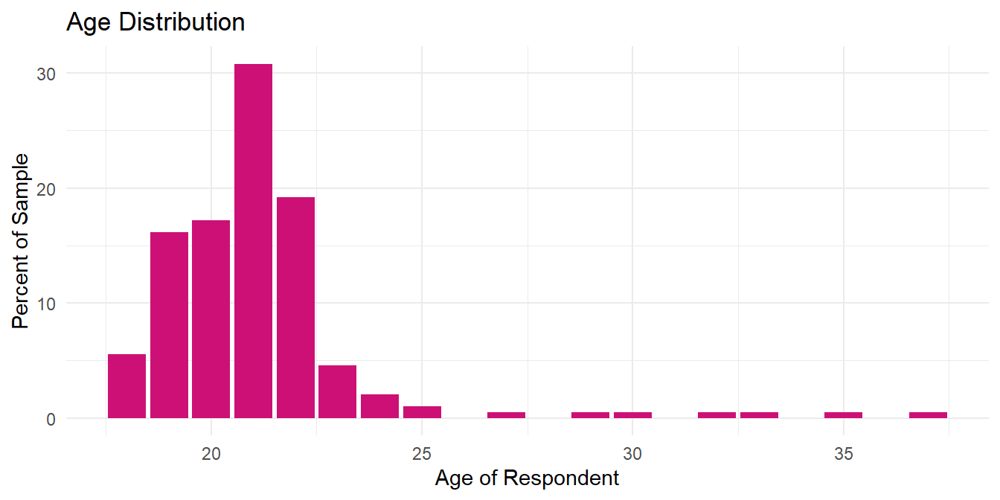
- The mean age is 21.11 years old
- The median age is 21
- The oldest respondent is 37
- The youngest is 18
These statistics show our sample is made up of mostly traditional college age students. There are of course exceptions; 22 of 198 total respondents are over the age of 22, or 11.11 percent of the sample.
Racial Groups
Question: "How do you primarily identify?"
The table bellow sorts the race categories from most-represented in our sample to the least represented.
| Racial Group | Count | Percent |
|---|---|---|
| White | 91 | 45.96 |
| Asian | 53 | 26.77 |
| Two or more races | 22 | 11.11 |
| Black or African American | 14 | 7.07 |
| Other | 12 | 6.06 |
| Prefer not to say | 5 | 2.53 |
| Native Hawaiian or other Pacific islander | 1 | 0.51 |
We can see the vast majority of responses fall into the White and Asian categories. Given this, we probably won't have enough observations from the other groups to be able to make any claims about associations with those identities. An alternative way of describing the race quesiton is to create dummy variables for White, Asian, and Other.
We also might want to use an alternative variable for race that only takes one of the three categories white, asian, or other. (This is different from dummy variables since dummies are each their own variable. The new race variable, called race_3, is one variable that takes one of three vales.) The table below summarizes the new three-category race variable.
| Racial Group | Count | Percent |
|---|---|---|
| White | 91 | 45.96 |
| Asian | 53 | 26.77 |
| Other | 54 | 27.27 |
Ethnicity
Question: "Do you identify as Hispanic or Latinx?"
| Hispanic/Latinx | count | percent |
|---|---|---|
| No | 176 | 88.89 |
| Yes | 22 | 11.11 |
In the style of the US Census, we keep race and ethnicity as separate questions. This means people can pick any race and in addition identify as Hispanic/Latinx, or not. The table to the right shows that 11.11 percent of the sample identifies as Hispanic or Latinx.
The plot below shows the racial composition of our sample and breaks down each racial category according to its Hispanic/Latinx composition.
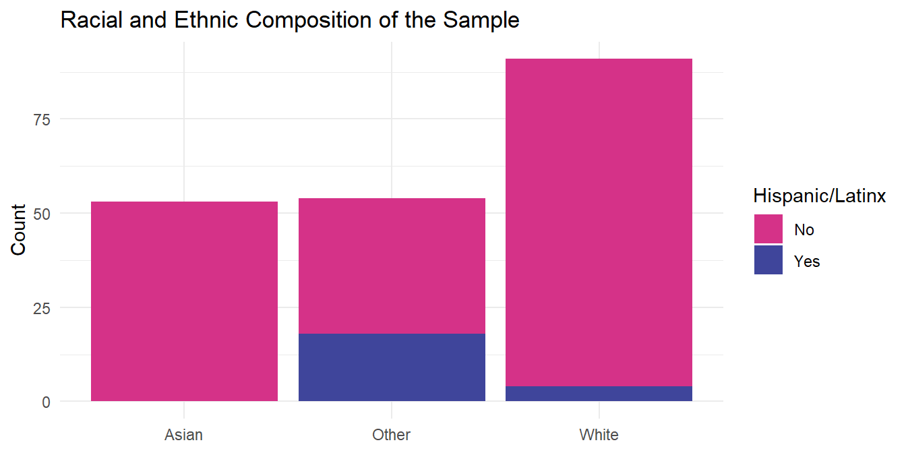
This shows that most of the respondents who identify as Hispanic or Latinx categorized themselves into the "Other" race category and a much smaller amount in "White" (there were no Asian and Hispanic/Latinx respondents). It also shows that a significant proportion of the "Other" category is made up of respondents identifying as Hispanic or Latinx.
Gender
Question: "What is your gender identity?"
| Gender Identity | Count | Percent |
|---|---|---|
| Woman | 111 | 56.06 |
| Man | 77 | 38.89 |
| Non-binary | 7 | 3.54 |
| Prefer not to say | 2 | 1.01 |
| Other | 1 | 0.51 |
The majority of our respondents identified as female with about 55%. About 40% identified as male. We believed that this was the result of the female willingness to participate in our study. We also noticed that the majority of our interviewees identified as female. There is also a higher population of females attending college in the state of Washington.
First Generation
Question: "Have either of your parents completed a four-year college degree?"
| First Generation | Count | Percent |
|---|---|---|
| No | 126 | 63.64 |
| Yes | 72 | 36.36 |
Our question about parents education (whether either received a four-year degree) is one of the best measures of social and economic status (SES) we have in our survey. Since our survey question asks whether either parent completed a bachelor's degree, we create a new variable called first_gen that shows whether the respondent would be the first in their family to complete a four-year degree. So if the question response was no, then the new variable takes the value "Yes". The table to the right summarizes the new variable.
The figure below shows the racial makeup of the new variable. This plot uses the "fill" setting to show the proportion of each response (first gen or not) represented by the three racial categories.

This shows that the group of first generation students is slightly less white, much less Asian, and much more "Other" than the non-first generation group.
Residency Status
Question: "What is your residency status?"
| Residency Status | Count | Percent |
|---|---|---|
| US Citizen | 168 | 84.85 |
| International student | 17 | 8.59 |
| US Permanent Resident | 9 | 4.55 |
| Undocumented/DACA | 3 | 1.52 |
| Prefer not to say | 1 | 0.51 |
This the table to the right shows a large majority of respondents are US Citizens, followed by a much smaller proportion of respondents falling into categories for International Students, US Permanent Residents, and Undocumented/DACA. It's possible that undocumented/DACA recipients are less willing to take a survey or if they do less likely to report their status.
We can also do a race breakdown of the different residency statuses. The plot below shows the responses to the residency question broken out by the three-category race variable.
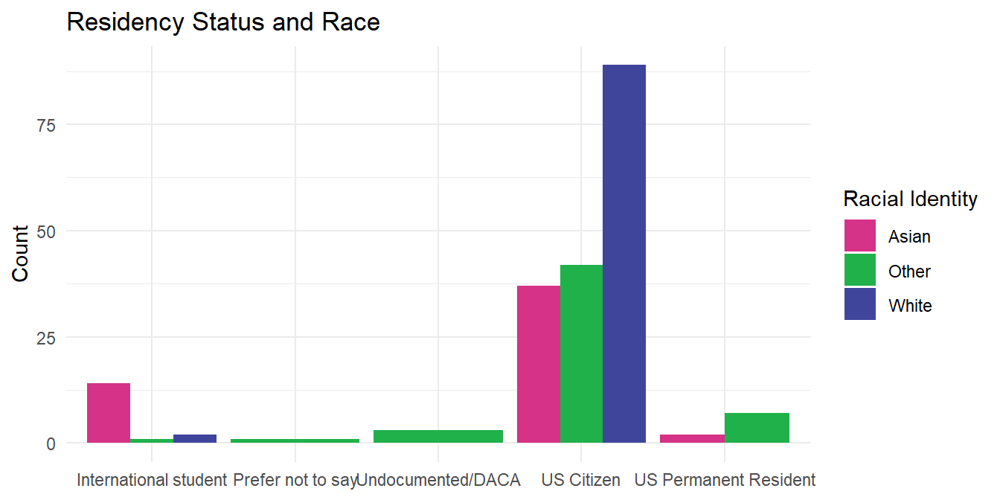
This shows the majority of International Students identify as Asian, undocumented/DACA as "Other", and US Permanent Resident as "other". Within the US Citizen category we see a majority of respondents identifying as white, but a good number identifying as Asian and Other as well.
Politcal Ideology
Question: "Please indicate your political preferences on a range of very liberal (1) to very conservative (7)?"
We modified this variable by subtracting 4 from the seven-point scale, making the center value (4) take a value of zero. We call this new variable ideology.
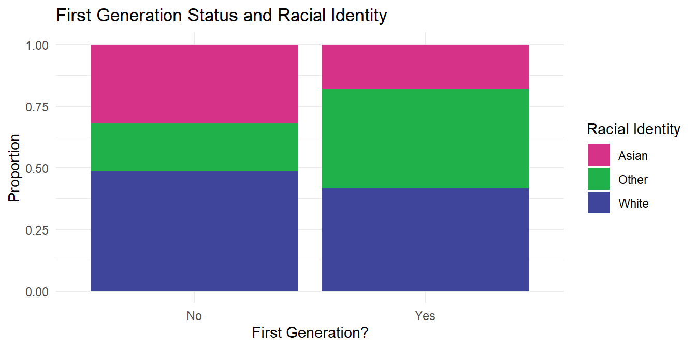
- The mean ideology is -1.32
- The median ideology is -2
- 2 respondents identify as 'very conservative'
- 42 respondents identify as 'very liberal'
Question: What are the politcal preferences across differnt grades?
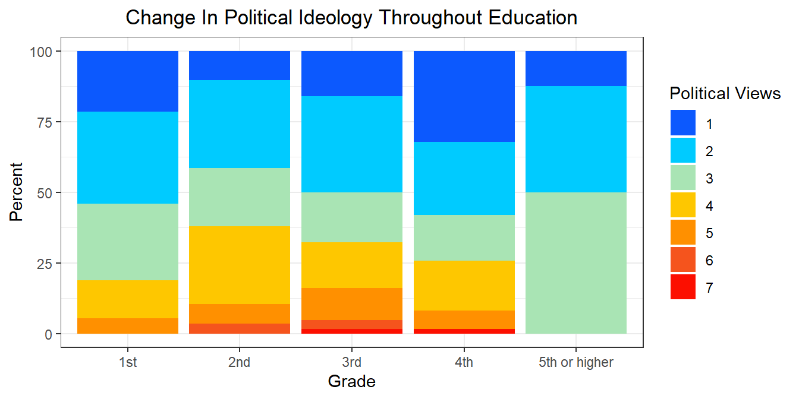
As students progressed through their undergraduate education, they became more and more liberal and less conservative with no 5th year students identifying on the conservative side of our spectrum. This is consistent with the trend of education leading to more liberal views. Studies have shown that individuals with a college degree will be significantly more conservative than those with only a high school diploma.
School
Question: In what university or college are you currently enrolled?
| School | Count | Percent |
|---|---|---|
| uw (nonspecified) | 100 | 50.51 |
| uw seattle | 40 | 20.20 |
| wwu | 15 | 7.58 |
| gonzaga university | 12 | 6.06 |
| highline community college | 7 | 3.54 |
| bellevue college | 3 | 1.52 |
| uw tacoma | 3 | 1.52 |
| wsu | 3 | 1.52 |
| central washington university | 2 | 1.01 |
| everett community college | 2 | 1.01 |
| university of puget sound | 2 | 1.01 |
| uw bothell | 2 | 1.01 |
| edmonds (community) college | 1 | 0.51 |
| north seattle community college | 1 | 0.51 |
| seattle university | 1 | 0.51 |
| shoreline community college | 1 | 0.51 |
| south seattle college | 1 | 0.51 |
| whatcom community college | 1 | 0.51 |
| whitman college | 1 | 0.51 |
For this question, respondents were allowed to write in their responses. This means the responses for one school (like University of Washington) could be written in more than one way (UW, university of washington, UW-Seattle, etc.). To deal with this, we changed all responses to lower case text (to prevent mismatch based on case-sensitivity) and grouped responses together according to rules we created. For example, responses that include the text washington and seattle were recoded as uw seattle. We did this to the best of our ability to match the appropriate responses together. We condensed the current responses to 19 schools (this was done separately in the "data_download.R" script). The unique schools in our sample are displayed in the table to the right.
At this point we have a very large proportion of our sample attending University of Washington in Seattle and University of Washington without a specified campus. It's probably safe to assume the respondents mean the main Seattle campus, but for now we won't make that assumption. Right now, only 50.51 percent of the indicated they currently attend a school that is not in the top two categories.
Major
Quesiton: What is your major?
The major question has issues similar to the school variable. However, it's probably not worth grouping all the majors together since the high number of unique responses (108 in total) is not due to mis-categorization, but because there actually are a lot of different majors in the sample. In other words, even if did take the time to adjust the responses, there probably wouldn't be enough responses in any major to allow us to make any strong claims about any of them.
| Major | Count | Percent |
|---|---|---|
| psychology | 19 | 9.60 |
| nursing | 10 | 5.05 |
| biology | 9 | 4.55 |
| sociology | 9 | 4.55 |
| computer science | 7 | 3.54 |
| business | 5 | 2.53 |
| economics | 5 | 2.53 |
| political science | 5 | 2.53 |
| biochemistry | 4 | 2.02 |
| engineering undeclared | 4 | 2.02 |
Therefore, unless we can come up with a good reason to do otherwise, we're going to leave the major catagories as they were written in. The table below shows the ten most common write-in majors in our sample.
Housing
Secure housing before the outbreak
Question: According to the definition above, was your housing situation secure BEFORE the COVID-19 outbreak?
| Secure Housing Before | Count | Percent |
|---|---|---|
| Yes | 197 | 99.49 |
| No | 1 | 0.51 |
Not many respondents were living in 'insecure' housing conditions prior to the outbreak; currently only 1. We shouldn't assume this means there are approximately 0.51 percent of undergraduate students living in such conditions. In fact, this very low number may be due to a selection bias that is the result of being limited to online methods of recruiting participants. And even if it is accurate that 0.51 percent of undergraduate students in WA state live in these conditions, this still means that at a school the size of UW there are approximately 157 students living in 'insecure' housing conditions.
Housing type
The following two questions were asked to respondents regarding their housing situation before and after the outbreak of COVID-19. The quesiton asked prior to the outbreak was asked to everyone who indicated they live in 'secure' (more on this below) housing, while the second was asked only to respondents indicating (1) they experienced a change in housing since the outbreak of the virus and (2) they currently live in 'secure' housing conditions.
- Prior to the outbreak: Which option most accurately describes your housing situation BEFORE the COVID-19 outbreak?
- After to the outbreak/current housing: Identify which option most accurately describes your CURRENT housing situation.
But these two questions leave out respondents who live in 'insecure' housing; these respondents given an NA for each of these questions. So to get a table with the before and after housing charactertics we have to manually add in the 'insecure' respondents (both before and after the outbreak). The code for creating these variables can be viewed in the .Rmd file and in the "data_download.R" script.
| Housing Type | Before | After | PP Change | A/B Ratio |
|---|---|---|---|---|
| Parents/guardians | 21.21 | 59.09 | 37.88 | 2.79 |
| Insecure | 0.51 | 1.01 | 0.50 | 1.98 |
| Greek | 4.55 | 1.01 | -3.54 | 0.22 |
| Off-campus | 48.48 | 33.84 | -14.64 | 0.70 |
| On-campus | 25.25 | 5.05 | -20.20 | 0.20 |
The first column of the table shows the housing type. The second and third columns show the percentage of the sample that fall into each of the housing categories before and after the outbreak of COVID-19. The last two columns show (1) the percentage point (PP) change from before to after and (2) the ration of respondents falling into each catagory after over before (after/before). The PP change reflects the change in terms of percentage of the total sample. The ratio shows the 'after' value in terms of the 'before' value. So a category representing 5% of the sample before that increases to 10% after has a PP Change of 5% but a A/B Ratio of 2.0 (in other words, the number of respondents in the category doubled). If the ratio is greater than one it means the count in that category increased and if it is less than one (it cannot be negative) it means the count in the category decreased.
The table is sorted to show the largest positive PP Change at the top. We can see the largest PP change was for Parents/Guardians, meaning a lot of respondents moved in with parents/guardians. The ratio suggests the number of respondents from before to after almost tripled. The number of people living in insecure housing conditions also shows a very high ratio, but the starting number is much smaller, meanin the numbe rof people moving into that category wasn't that big when viewed as a percentage of the sample. We see a moderate decrease among people living off-campus and a very large decrease among respondents living on-campus. This makes sense, since we know a lot of people were required to move out of dorms.
Roommates, internet, and computers
Like the table on housing above, the next three tables show the percentage of resppondents that fall into each category before and after the outbreak, as well as the percenatage point change and the after/before ratio. The first is the number of people the respondent lives with, followed by access to internet and access to a computer.
| Roommates | Before | After | PP Change | A/B Ratio |
|---|---|---|---|---|
| Two or more | 65.66 | 76.77 | 11.11 | 1.17 |
| Insecure Housing | 0.51 | 1.52 | 1.01 | 2.98 |
| Living Alone | 9.09 | 7.58 | -1.51 | 0.83 |
| One other person | 24.75 | 14.14 | -10.61 | 0.57 |
The largeest increase can be seen among people living with 2 or more people, the changes are low in the insecure and living alone categories, and there's a large decrease in people living with one other person. This makes sense as people move back home or in with other friends/family to save money or because they were required to leave dorms.
Overall, respondents are on average living with more people than before the outbreak. We can't measure this exactly because we didn't ask for a specific number of roommates beyond two, but we see there is a decrease in the number of people living alone and with one other person, and an increase in those living with two or more other people. There's also an increase in insecure housing, but we know from their responses that they primarily sleep at their friends, meaning they are living at least with one other person.
| Internet Access | Before | After | PP Change | A/B Ratio |
|---|---|---|---|---|
| Unreliable, unstable, or slow | 6.06 | 13.64 | 7.58 | 2.25 |
| No access | 1.01 | 1.01 | 0.00 | 1.00 |
| Stable and reliable | 92.93 | 85.35 | -7.58 | 0.92 |
Next is internet access. The table to the right shows the same same figures: before, after, PP change, and A/B ratio. The table doesn't show any dramatic changes, but the changes are in the direction we would expect. People with unreliable internet access increased with a moderate PP change (the percentage change in terms of the percentage of the sample) and a large A/B Ratio, meaning the number of respondents reporting unreliable internet access doubled since the outbreak. The number of people without any access to the internet did not change since the outbreak, and they represent a small proportion of the sample.
| Computer Access | Before | After | PP Change | A/B Ratio |
|---|---|---|---|---|
| Shared/occasional access | 2.02 | 3.03 | 1.01 | 1.50 |
| Exclusive/reliable access | 97.98 | 96.97 | -1.01 | 0.99 |
The next table (to the right) shows access the before and after access to a computer reported by our respondents. We only see a small change, with slightly more respondents reporting having to share a computer or having occasional access (for those living in insecure housing). On the one hand, taken together with the low percentage of respondents not having internet access, this may be a good sign that the vast majority of students were well-equipped for the transition to online learning. On the other hand, it may reflect a sampling bias that results from promoting a survey solely online -- those without computers are less likely to encounter the survey.
Change in housing
Question: Since the COVID-19 outbreak, has your housing situation changed?
| Housing Type | No | Yes |
|---|---|---|
| Greek | 22.22 | 77.78 |
| Insecure | NA | 100.00 |
| Off-campus | 59.38 | 40.62 |
| On-campus | 16.00 | 84.00 |
| Parents/guardians | 90.48 | 9.52 |
The table to the above shows the proportion from each housing type (prior to the outbreak) that experienced a housing change. The rates vary dramatically across housing types. This makes sense, as many students in fraternities/sororities and in on-campus housing (like dorms) were required to vacant their place of residence. On the other hand, students living with parents/guardians and living off-campus were much less likely to report a housing change since the outbreak.
| Change Type | % of Subset |
|---|---|
| Moved back home | 49.46 |
| Left on-campus housing | 41.94 |
| Left greek housing | 7.53 |
| More roommates | 31.18 |
| Fewer roommates | 5.38 |
| From secure to insecure | 2.15 |
The first three items in the table to the right shed light on the reasons for the reported change in housing. Almost one half (49.46%) of the subset moved in with parents or guardians. A large percentage of the subset left on-campus housing (41.94%) and smaller left greek housing (7.53%).
The fourth and fifth items reflect changes in the number of people respondents lived with. These variables are conservative underestimates of the actual changes; if people indicated they live with two or more people before and after the outbreak, we have no way of knowing if there was a change, even if they live with more or fewer people since the outbreak. Even with these imperfect estimates, we can see significant changes in living arrangements. Of those reporting a change in housing, 31.18% report living with more people and 5.38% reporting living with fewer people.
Finally, the table shows that 2.15% of the subset moved from secure housing to insecure housing.
Insecure Housing
We don't have many responents who reported living in insecure housing conditions. In the survey, we define insecure housing as the following:
When we say "secure" housing, we mean either (1) having a stable place of residence in a dorm, apartment, or house, or (2) living with parents, guardians, or other family/friends. Not having "secure" housing includes experiencing homelessness as well as temporary housing in shelters, with friends, emergency accommodations, or boarding houses.
We don't have a lot of people reporting to live in 'insecure' conditions. In total, we have only 3 observations that fall into 'insecure' housing conditions either before the outbreak or currently.
| Before | Current | Gender | Race | First Gen. | Residency | School |
|---|---|---|---|---|---|---|
| No | Yes | Woman | Asian | No | International student | uw (nonspecified) |
| Yes | No | Woman | White | Yes | US Citizen | seattle university |
| Yes | No | Man | Black or African American | Yes | US Permanent Resident | highline community college |
The one thing that sticks out is first generation status. First generation students make up NA% of the total sample but NA% of those living in insecure housing conditions.
The table below shows living situations of the 3 respondents pior to (we already know 1 of them was in insecure housing prior to the outbreak) and since the COVID-19 outbreak.
| Before Outbreak | Situation Before | Current Situation |
|---|---|---|
| NA | I slept on friends' spare beds, couches, or floors | NA |
| On-campus housing | NA | I've slept on friends' spare beds, couches, or floors |
| Off-campus housing (not with parents/guardians) | NA | I often go one or more nights without my own bed |
Below are a few observations on the inscure subset. Of the 3 respondents in the subset:
- 1 lived in on-campus housing prior to the outbreak
- 2 lived reported living at a friends place sleeping on a floor, spare bed, or couch
Online Education
Online Learning During The Outbreak
This section explores the experience of college online learning. Here we assess our survey questions on experiences with the transition to online learning and education under the conditions of the COVID-19 crisis. Our questions are split into a few general categories: course changes, accessibility of reliable technology and internet required for online learning, accessibility of school resources, and the effectiveness of online learning.
Reported Changes In Education Behavior
Question: How do students view various aspects of their involvement in online learning compared to prior to the outbreak.
The table and plot bellow summarizes the responses to a series of questions related to how students view various aspects of their involvement in online learning compared to prior to the outbreak. The first question, above, asks whether respondents believe their focus on school work has changed since the outbreak. Respondents can indicate each item has increased, decreased, or remained the same. The items are focus on school work, motivation on school work, time spent on school work, attendance to lectures and sections, and participation in lectures or sections. The last two questions include a "not applicable" response to allow sensible responses for those who do not attend traditional classes, such as music, art, or science students taking lab courses.
| Since outbreak | Focus | Motivation | Time | Attendance | Participation |
|---|---|---|---|---|---|
| Increased | 6.06 | 3.54 | 25.76 | 7.58 | 11.62 |
| About the same | 11.62 | 9.09 | 24.24 | 48.99 | 30.30 |
| Decreased | 82.32 | 87.37 | 50.00 | 42.42 | 56.57 |
| Not applicable | NA | NA | NA | 1.01 | 1.52 |
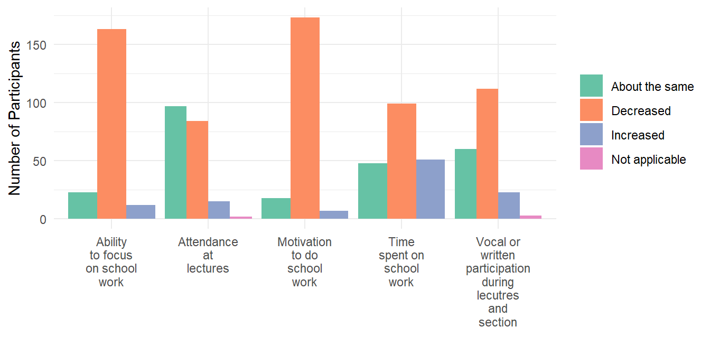
With the exeption of attendace, the majority of respondents indicate each item has decreased since the outbreak (and only a small percentage of respondents indicated their attendance has increased). This suggests students are, on average, finding their focus on school work, motivation for school work, time spent on school work, and participation in their classes is lower than it was prior to the outbreak.
Question: BEFORE the COVID-19 outbreak, where did you primarily do your school work?
| Primary workspace | Pre-outbreak | Current | PP Change |
|---|---|---|---|
| My place | 35.35 | 95.96 | 60.61 |
| Friend's place | 0.51 | 2.02 | 1.51 |
| University space | 54.55 | 1.01 | -53.54 |
| Private establishment | 6.57 | 0.51 | -6.06 |
| NA | 0.51 | 0.51 | 0.00 |
| Public library or community center | 2.53 | 0.00 | -2.53 |
The table to the right shows the percentages of our sample that primarilyp perform schoolwork in the listed spaces both before and since the outbreak of COVID-19. Prior to the outbreak, most respondents report primarily using university spaces for study, followed by their own place of residence. Currently, the vast majority of respondents (95.96%) report primarily performing school work at their current residence. The percentage point increase is largest for this category -- as we would expect given the stay-at-home orders -- and the largest decrease can be seen among respondents working at college or university spaces (libraries, computer labs, lounges, etc.). The only other category to show an increase is working at a friend's residence, but the increase is still quite small. The private establishment (coffee shop, restaurants, etc.) and public library or community center both decreased (and in the case of the latter, went to zero). Overall, these results are what we couldwould expet to see given social distancing and stay-at-home orders.
Effectiveness Of Online Leanring During The Outbreak
Question: How do students perceive the effectiveness of certain aspects with E-Learning prior to the outbreak
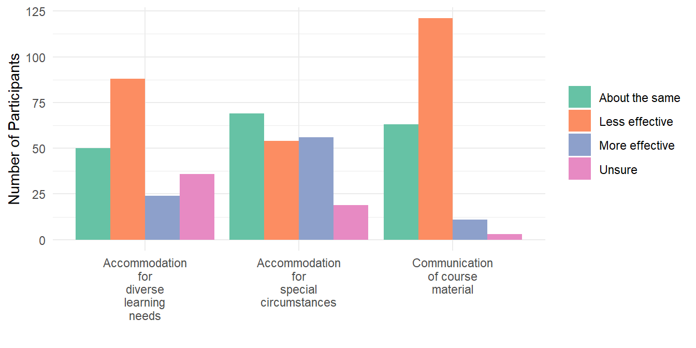
We wanted to learn more about how students perceive the effectiveness of certain aspects with E-Learning prior to the outbreak. The plot above summarizes the results we recived for this particualr question. In our survey, we asked students a series of questions relating to accommodating scenarios and course materials within an online environment. Respondents can indicate their answers by selecting whether each item is less effective, more effective, remains the same, or is unsure. The items that were asked are Accommodation for diverse learning needs, accommodation for special circumstances, and communication of course material.
Education Resource Avaibility During The Outbreak
Question: How do students feel about the availblity of certain college resources compare to prior to the outbreak
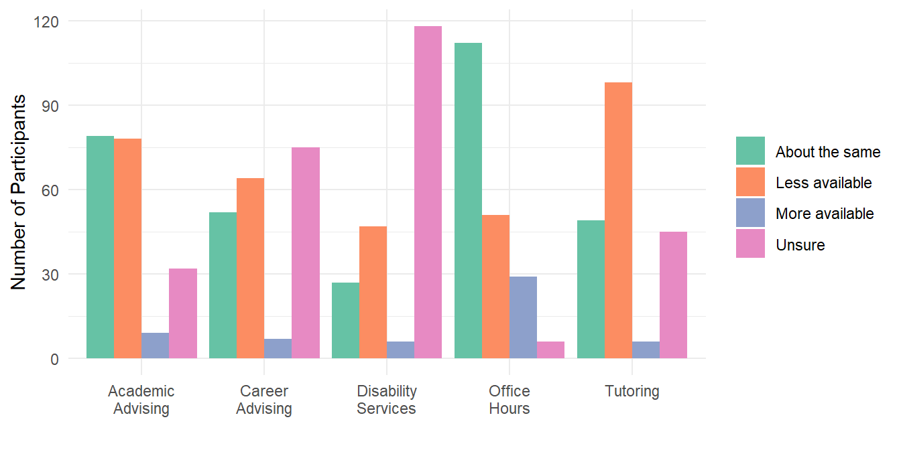
About 50% of our respondents reported academic tutoring to be less available. About 25% were unsure. We expected this to be the case because online tutoring services are likely to be of lesser quality and students are less likely to seek help over zoom office hours than in person. We also expected a certain group to be unsure because certain people don’t seek tutoring services.
About 60% of our respondents reported office hours being just as available while about 25% reported it being less available. We expected this to be the case because the majority of professors and instructors are still making themselves available over zoom to help their students. Students may report it being less available due to the limitations of the type of help that may be given over Zoom.
About 40% of survey respondents reported academic advising to be just as available and another 40% reported it being less available. We expected this to be the case because the majority of academic advisers, at least at the uw, are still working the same hours and offering help over email, phone, etc. It may be less available due to the limitations of the service.
About 60% of our respondents were unsure about the availability of disability resources while about 25% reported it being less available. We had expected the majority of our respondents to be unsure about the availability of disability services because the majority of undergraduates aren’t using disability resources to begin with.
About 40% were unsure about changes to the availability of career advising while about 30% reported it being less available. We had expected this to be the case because the majority of college undergraduates aren’t aware of the career advising resources on campus. It is also less likely for under-classmen to seek help from these services.
Graduation Plans
Changes In Post-graduation Plans
This section explores the topic of how the COVID-19 outbreak has impacted student graduation plans. Here we assess our survey questions related to graduation plans before the outbreak and any changes that may have occured since the outbreak of COVID-19.
Pre-Outbreak Post Graduation Plans
Question: Have you made changes to your plans to graduate?
| Plan to Graduate | Count | Percentage of Respodent |
|---|---|---|
| I'm delaying graduation | 22 | 11.11 |
| I'm trying to finish sooner | 14 | 7.07 |
| My plans to graduate have not changed | 162 | 81.82 |
The survey includes a series of questions related to graduation and post-graduation plans. Most survey respondents indicate that their plans to graduate remain intact. The table to the right shows that 82% of respondents indicate no change in their plans to graduate, 11% of survey respondents are delaying graduation, and about 7% of survey respondents are trying to finish their coursework sooner. These results are somewhat unexpected because the outbreak of COVID-19 has largely impacted how classes are taught, student housing, and employment among many other factors. We expect that more students would report delaying graduation and trying to finish classes sooner because the outbreak has simultaneously affected many aspects of students’ lives.
Question: BEFORE the COVID-19 outbreak, what were your post-graduation plans? (Check all that apply)
| Post Graduation Plan | Percentage of Respodent |
|---|---|
| Look for a job | 56.06 |
| Graduate school or professional school | 34.85 |
| Undecided | 27.78 |
| Travel for an extended period of time | 21.72 |
| Volunteering or doing service work | 20.71 |
| I had/have a new job or internship lined up | 15.66 |
| Keep my current job | 6.57 |
The survey asks respondents about their pre-outbreak post-graduation plans. Many survey respondents indicate they plan to look for a job, although graduation status affects respondents’ post-graduation plans. About 56% of our total survey respondents report that they plan to look for a job post-graduation. Although, Figure 4.3.1 shows that 40% of 2020 graduates plan to find a new job post-graduation and 61% of respondents not graduating in 2020 plan to. Attending graduate or professional school (35%), traveling (22%), and volunteer or service work post-graduation (21%) are the next most common collective responses.
Post Graduation Plans and Graduation Status
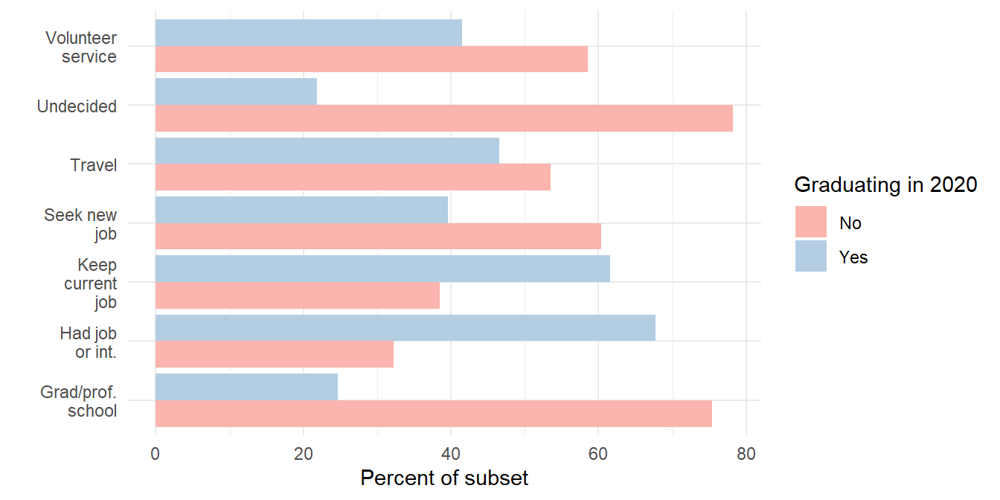
According to the figure above, non-graduating respondents are far more likely to indicate they will attend graduate or professional school post-graduation (75%), while graduates are less likely to (25%). Non-graduates are somewhat more likely to plan to travel post-graduation (54%), with graduates being slightly less likely to (45%). Continually, non-graduating respondents are also somewhat more likely to indicate they will volunteer or perform service work (59%) compared to graduates (42%). Meanwhile, 16% of all survey respondents indicate that they have or had a job or internship secured post-graduation, and 7% of survey respondents plan to keep their current job post-graduation. About 32% of non-graduating respondents plan to pursue a job or internship post-graduation, while the figure is 68% for graduates. Additionally, 39% of non-graduates plan to keep their current job post-graduation, while 62% of graduates do. Finally, 28% of all survey respondents report they are undecided about their post-graduation plans. Yet, 78% of non-graduates indicate they are undecided about their post-graduation plans, while 22% of graduates do.
Reported Changes In Post Graduation Plans
Stratifying Post-Graduation Plans with Changes in Post-Graduation Plan
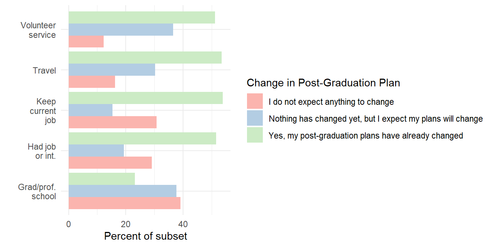
The figure above shows 37% of respondents planning to perform volunteering and service work expect a change to their post-graduation plans, while 51% already had their plans change. Among respondents planning to travel, 30% expect a change and 54% have experienced a change. In fact, in an interview a graduating senior indicated that they planned to travel to Tokyo for the Tokyo Olympics after graduating, only for those plans to be cancelled. For those who were planning to keep their current job, 19% expect a change and 54% have already experienced a change. About 19% of respondents that secured a job or internship for post-graduation expect their post-graduation plans to change, and 52% have already seen their plans change. Lastly, among respondents planning to go to graduate or professional school post-graduation 38% expect a change to their plans and 23% have already experienced a change.
These results show that respondents intending to pursue graduate or professional school were the least likely to experience a change to their post-graduation plans. Meanwhile, respondents’ plans to do volunteer and service work, travel, keep current jobs, and pursue a post-graduation job or internship have all changed dramatically.
Changes In Plans To Search For Post-Graduation Job
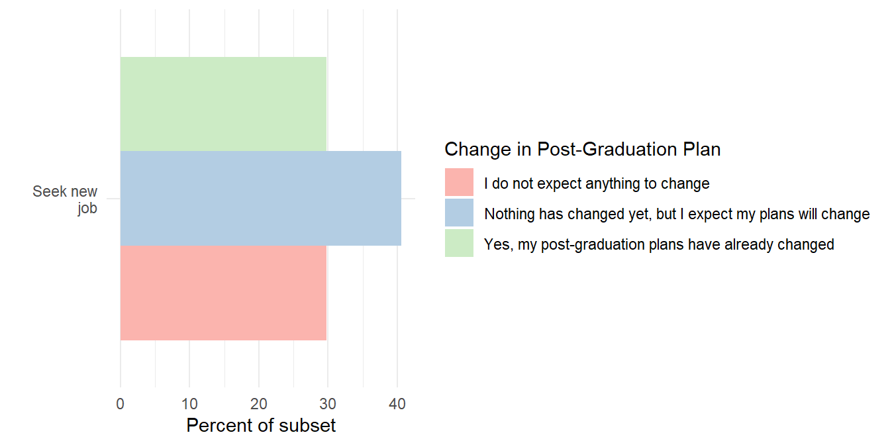
As shown in the Figure above, 41% of respondents planning to look for a new job post-graduation expect their plans to change. Separately, about 30% of respondents that have already experienced a change to their post-graduation plans plan to look for a new job post-graduation.Thus, many students have likely had to rely on future employment to alleviate the current uncertainties they are facing. Furthermore, some of the students who had a future job or internship revoked or students that lost a current job may also be represented in this sample. Many of these current uncertainties may have to do with the upsurge of jobs and internships being revoked and the limited time students have to make alternative post-graduation plans. More respondents indicating that they expect their plans to change implies that respondents cannot rely on a currently secure job or internship to remain secure.
Change in Post-Graduation Plans and Anxiety
| Change in Post Graduation Plans | Experinced More Anxiety |
|---|---|
| I do not expect anything to change | 43.06 |
| Nothing has changed yet, but I expect my plans will change | 65.71 |
| Yes, my post-graduation plans have already changed | 64.29 |
Of the survey respondents who already had their post-graduation plans changed, 65.2 percent have experienced anxiety more often. In addition, for those who have not changed their post graduation plans as of yet but expect their post graduation plans to change in the future have shown a slightly increased experience of anxiety with respondents at 65.7 percent. Although the difference between is only 0.05%, there is a difference of 16 more survey responses that claimed to experience anxiety more often for those who expect their graduation plans to change in the future. This makes sense as these individuals are anticipating change but are unsure what the future holds for them, compared to those who already had changed their post graduation plans. For those who do not expect anything to change, the respondents who experienced about the same levels of anxiety and more often are very similar. Thus, we assume that their experience with anxiety is outside the variable of post-graduation plans.
Graduates With Pre-COVID-19 Jobs or Internships and had Job Revoked
Post-Graduation Job or Internships by Graduation Status
| Job or Internship Post Graduation | 2020 Graduate | Count | Percentage of Respondent |
|---|---|---|---|
| No | No | 112 | 91.80 |
| No | Yes | 55 | 72.37 |
| Yes | No | 10 | 8.20 |
| Yes | Yes | 21 | 27.63 |
According to the table to the right, 28% of respondents graduating in 2020 report that they have or had a job or internship secured for post-graduation, while 8% of respondents not graduating in 2020 did. This meets our expectations that graduates are more likely to have jobs or internships prepared for after graduation than non-graduates because they are closer to entering the labor market and are more likely to be prepared for their post-graduation.
Experience of Job Being Revoked by Graduation Status.
| Job Revoked | 2020 Graduate | Count | Percentage of Respondent |
|---|---|---|---|
| No | No | 86 | 70.49 |
| No | Yes | 50 | 65.79 |
| Yes | No | 36 | 29.51 |
| Yes | Yes | 26 | 34.21 |
This table to the right shows that 34% of 2020 graduates had a job revoked, while 30% of respondents not graduating in 2020 did. This implies that a number of our respondents, both graduating and not, had jobs they did not report they had secured for post-graduation revoked. The COVID-19 outbreak has made the job market very precarious. It’s extremely unlikely any students anticipated something on the scale of the COVID-19 outbreak when making post-graduation plans. Students who have worked hard to acquire jobs and internships in preparation for their post-graduation lives have instantly lost progress towards some of their most important career opportunities.
It is both discouraging and difficult for students to unexpectedly lose a job or internship and have to begin the process of looking for a new job or internship in a suddenly tight job market. Graduates, as opposed to non-graduates, have limited time to devote towards searching for a new job or internship because they likely have to manage the cost of housing and transportation among other expenses. As a result, graduates who lost a job or internship may have to settle for a temporary or unideal job in order to pay for their expenses while looking for a new job or internship opportunity.
Reported Pre-COVID-19 Job or Internship Revoked.
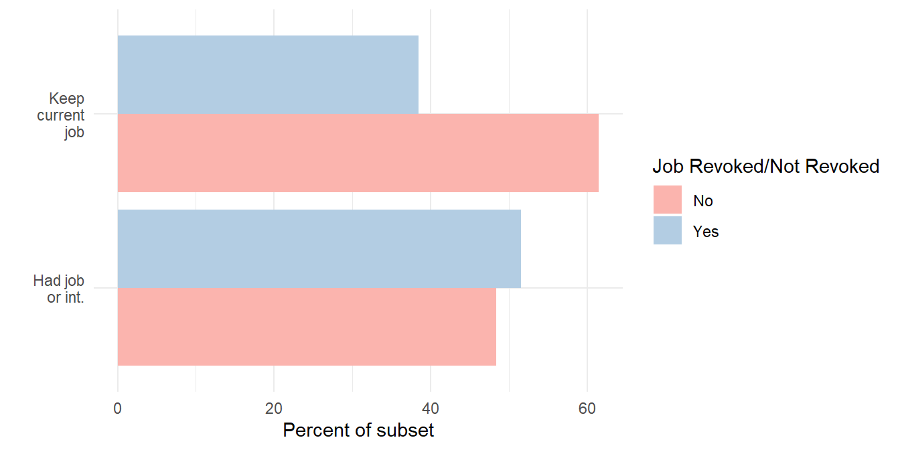 According to the Figure above, 39% of respondents that intend to keep their current job post-graduation have had their job revoked. Meanwhile, 52% of respondents that plan to pursue a job or internship post-graduation had their job revoked.
These results partly indicate that respondents may have had a job or internship cancelled because of the COVD-19 outbreak or that respondents with current jobs were laid off. Continually, the respondents that lost their current job intended to continue being employed into their post-graduation. This implies that these respondents were likely relying on remaining employed in order to fulfil their plans. These students could have been relying on that career to help pay off finances, student loans, or other expenses. Moreover, students may rely on employment to pay off expenses so that they can pursue an alternative and more ideal form of employment such as a job or internship for a desired career. Thus, suddenly losing a source of employment that was originally perceived to be secure can impede students’ ability to make long-term career goals.
Health Changes
Changes in Physical and Mental Health
This section explores the topic of how the COVID-19 outbreak has impacted student health. Here we assess our survey questions related to changes in physical activity, as well as changes in mental health
Reported Changes in Mental Health
Question: Compared to before the outbreak of COVID-19, how often do you currently experience difficulty concentrating on tasks, lack of motivation to do daily tasks, anxiety, and feeling sad or depressed?
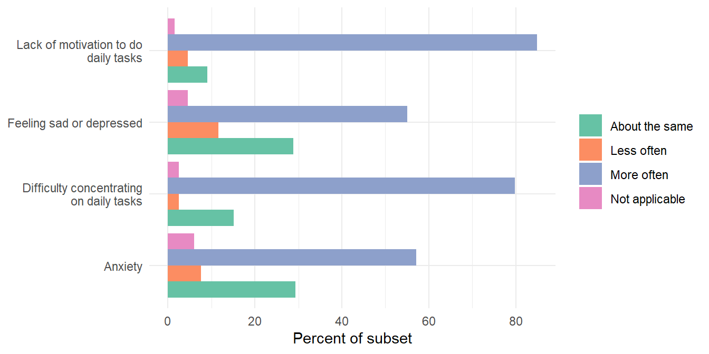
We asked students the following question in the survey: “Compared to before the outbreak of COVID-19, how often do you currently experience difficulty concentrating on tasks, lack of motivation to do daily tasks, anxiety, and feeling sad or depressed?” Participants were asked to answer these questions with the options: “Less often”, “About the same”, “More often”, and “Not applicable.” The Figure above summarizes the responses. The majority of survey respondents indicate they have experienced each of these categories more often compared to before the outbreak of COVID-19. In the end, 84.8% of our survey respondents indicate a lack of motivation for daily tasks happens more often and approximately 79.8% indicate more frequent difficulty concentrating on daily tasks.
Approximately 57% of respondents indicate they experience anxiety more often and 55% of respondents indicate they experience sadness and/or depression more often compared to before the outbreak of COVID-19. One possible explanation that can affect these results is the amount of people that the survey respondents are living with currently. For those living with one or more people, they would experience less anxiety and sadness/depression compared to living alone.For survey respondents that reported that they lived alone, 60% reported feeling anxiety more often and 73.3% reported feeling depression more often. In comparison, 54.6% of survey respondents living with two more or more people indicated that they felt anxiety more often, and 52% indicated they experienced depression more often. However, concentration decreases for those living with one or more people compared to those living alone. Despite these differences in responses between concentration/motivation and anxiety/sadness, overall the responses that we received were what we expected.
Reported Changes in Physical Health (Compared to before the Covid-19 Outbreak)
Question: Compared to before the Covid-19 Outbreak, do you currently do the following activities more or less?
Exercise
| Physical Exercise | Percent Of Respondent |
|---|---|
| About the same | 14.65 |
| Less | 64.65 |
| More | 20.20 |
| Not applicable | 0.51 |
Compared to before the COVID-19 outbreak, around 63 percent of respondents reported exercising less, 16 percent are exercising about the same amount, while 21 percent are exercising more. The significant decline in exercise could be attributed to the effects of social distancing guidelines and the stay-at-home order, closure of public and private gym facilities, mental health issues, etc.
Sleep
| Sleeping Habits | Percent Of Respondent |
|---|---|
| About the same | 30.30 |
| Less | 20.71 |
| More | 48.48 |
| Not applicable | 0.51 |
Compared to before the COVID-19 outbreak, around 47 percent of respondents reported sleeping more, 32 percent reported sleeping about the same amount, and 21 percent reported sleeping less. The significant amount of respondents who report sleeping more could be due to a reduction in time sensitive obligations, general inability to go outside and interact with others, the result of mental health issues, etc. The ones who report less sleep may be essential workers, have increased responsibilities in the household, increased course loads (voluntary or involuntary), and/or may be experiencing sleep issues related to mental health concerns.
Watching TV
| TV Habits | Percent Of Respondent |
|---|---|
| About the same | 23.74 |
| Less | 5.05 |
| More | 68.18 |
| Not applicable | 3.03 |
Compared to before the COVID-19 outbreak, we found that there has been an increase in TV viewing hours. Around 66 percent of respondents reported watching more TV, 25 percent reported watching about the same amount, 5 percent reported watching less, and 3 percent responded “not applicable”. This finding was rather expected, as generally, people are confined to their houses and may have little else to entertain themselves.
Playing Games
| Gaming | Percent Of Respondent |
|---|---|
| About the same | 35.86 |
| Less | 9.60 |
| More | 47.47 |
| Not applicable | 7.07 |
Compared to before the COVID-19 outbreak, around 46 percent of respondents reported playing more games, 35 percent reported playing about the same amount, 11 percent reported playing less, and 8 percent responded “not applicable”. Similar to TV watching, these results are more or less expected. The general idea is that students may play more games due to more free time, time at home, and/or to interact with friends and family.
Reading
| Gaming | Percent Of Respondent |
|---|---|
| About the same | 54.55 |
| Less | 11.62 |
| More | 30.30 |
| Not applicable | 3.54 |
Compared to before the COVID-19 outbreak, around 29 percent of respondents reported reading more, 57 percent reported reading about the same amount, 11 percent reported reading less, and 3 percent responded “not applicable”. The results are relatively consistent with expectations. Similar to games, the idea is that more time, especially, perhaps, on one’s own, may lead to increased reading. However, in certain cases, reading may also decrease due to reasons such as being an essential worker, having an increased course load, having more responsibilities at home, etc.
Talking to People
| Gaming | Percent Of Respondent |
|---|---|
| About the same | 27.27 |
| Less | 12.12 |
| More | 59.60 |
| Not applicable | 1.01 |
Compared to before the COVID-19 outbreak, 60 percent of respondents reported interacting more with people through messaging, phone calls, or video chat, 27 percent reported interacting about the same amount, 12 percent reported interacting less, and 1 percent responded “not applicable”. These results are relatively unsurprising. With social distancing guidelines, many cannot see their friends and family physically, necessitating chatting and other remote interaction. As for those that reported less interaction, this could be due to less free time, mental health issues, lack of access to devices and/or stable internet, etc.
Alcohol and Cannabis Consumption
Our survey includes questions on alcohol, cannabis, and other drug consumption. The figures bellow shows the percentage of respondents that report more, about the same, or less consumption since the outbreak of COVID-19. We assume not applicable means the respondent did not consume alcohol or cannabis prior to the outbreak, or since.
Alcohol consumption compared to before the COVID-19 outbreak
| Alcohol consumption | Percent Of Respondent |
|---|---|
| About the same | 23.23 |
| Less | 29.29 |
| More | 19.19 |
| Not applicable | 28.28 |
Around 20 percent of respondents reported consuming more alcohol, 22 percent reported consuming about the same amount, 28 percent reported consuming less, and 29 percent responded “not applicable”. Consuming more alcohol may be used to ease boredom and mental health issues. Reports of consuming less could be attributed to many students moving back home, the ban of social gatherings, increased difficulty in buying it, etc.
Cannabis consumption compared to before the COVID-19 outbreak
| Cannabis consumption | Percent Of Respondent |
|---|---|
| About the same | 16.67 |
| Less | 20.71 |
| More | 17.17 |
| Not applicable | 45.45 |
Around 18 percent of respondents reported consuming more marijuana, 16 percent reported consuming about the same amount, 20 percent reported consuming less, and 47 percent responded “not applicable”. Similar to alcohol, an increase in marijuana consumption could point to increased boredom, mental health issues, stress, etc. Alternatively, a decline in consumption could be due to many of the same reasons suggested in the alcohol section (moving back home, loss of income, etc.). Furthermore, our results may be biased, in part due to the potential stigma surrounding marijuana consumption. This may lead respondents to fear reporting usage and/or increased usage.
Changes in alcohol and cannabis use by age
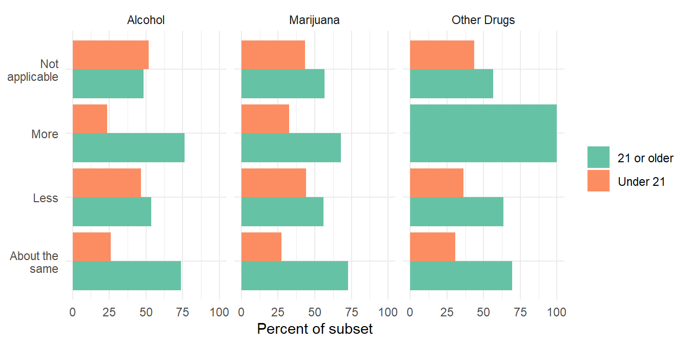
The Figure above displays the difference in responses by age group. The figure shows that at least some of the reported changes are linked to age. Under-age respondents report higher percentages of Not Applicable (again we assume this means they are not using these substances) and less consumption. We also see higher percentages indicating the same amount of consumption and more consumption for our respondents of legal age to purchase these products. This supports the idea that it has been more difficult for people under the age of 21 to obtain alcohol and cannabis (illegally) since the outbreak. This effect appears larger for alcohol than cannabis.
Other drug consumption compared to before the COVID-19 outbreak
| Other Drug Usage | Percent Of Respondent |
|---|---|
| About the same | 18.18 |
| Less | 16.67 |
| More | 2.53 |
| Not applicable | 62.63 |
Compared to before the COVID-19 outbreak, around 2 percent of respondents reported consuming more non-prescription drugs (excluding alcohol and marijuana), 18 percent reported consuming about the same amount, 16 percent reported consuming less, and 64 percent responded “not applicable”. As expected, most students report not taking non-prescription drugs. The minority that reports consuming more may be doing so to self-medicate and/or to ease boredom. Those consuming less could be having more difficulty purchasing non-prescription drugs (social distancing, moving location, loss of income, etc.).
Financial Changes
Financial and Employment Changes
In this section we explore our survey questions that relate to employment and finances. We show the changes our respondents experienced in terms of employment, changes in the sources of funds used toward their education, and whether they experience difficulties paying for a set of items.
Employment changes
Question: Were you employed at the time of the COVID-19 outbreak?
| Prior Employment | Percent Of Respondent |
|---|---|
| No, I was not employed | 46.97 |
| Yes, full time | 6.57 |
| Yes, part time | 46.46 |
The outbreak of COVID-19 has caused significant disruptions in the economy and the labor market in particular. The Table X shows the breakdown of employment status in our sample prior to the outbreak. About half (47%) of the sample was not employed prior to the outbreak (4.6% of which started a new job since), 6.6% were employed full time, and 46.5% were employed part time.
Question: How has your employment status changed since the COVID-19 outbreak?
| Changes to Employment | Percent Of Respondent |
|---|---|
| Laid off | 16.19 |
| Nothing has changed | 23.81 |
| Quit | 7.62 |
| Still technically employed but not currently working | 20.95 |
| Working fewer hours | 21.90 |
| Working more hours | 9.52 |
The survey also asks those respondents who were employed prior whether they experienced any changes in their employment since the outbreak. Of those employed prior to the outbreak, we find 16% were laid off, 7.6% quit, 21% are still technically employed but are not currently working, 22% are working fewer hours, 24% report no change in their hours, and 9.5% work more hours.
Question: Since the COVID-19 outbreak, have you received unemployment insurance?
| Recieved unemployment insurance | Percent Of Respondent |
|---|---|
| No | 45.45 |
| Yes | 7.58 |
| NA | 46.97 |
On the topic of unemployment insurance, 87 (47.0%) responded “No” for unemployment while only 9 (4.86%) responded “Yes”. 89 (48.1%) responded “NA”.
Education Funding Source
Reported changes in funding sources.
| Decreased | Increased | No change | Not Applicable | f_source |
|---|---|---|---|---|
| 9.09 | 8.08 | 69.70 | 13.13 | Parents/Guardians |
| 2.53 | 1.01 | 40.91 | 55.56 | Partner |
| 3.03 | 16.67 | 53.03 | 27.27 | Government loans/grants |
| 1.52 | 1.52 | 47.98 | 48.99 | Private loans |
| 3.54 | 2.53 | 59.09 | 34.85 | Scholarships |
| 28.79 | 5.56 | 42.93 | 22.73 | Personal Income |
Economic conditions, especially insecurity, related to the outbreak of COVID-19, the stay-at-home order, and social distancing have lively impacted students’ ability to fund their education. To get at this issue, the survey includes a series of questions on the sources from which respondents receive funding toward their education.
The table to the right shows the perceived changes in respondents' education funding sources. The funding received from these sources can either decrease, increase, or remain the same. Respondents can also indicate funding source is not applicable, meaning it wasn't a source of funding either before or since the outbreak.
The category with the greatest share reporting a decrease is personal income at 28.79%. We imagine if the survey was administered at a later date the number of respondents reporting decreases in various funding might greater as the economic consequences of the crisis take effect. The category with the largest percentage of the sample reporting an increase is funding from the govenrment. This could be due to respondents receiving funds from the CARES Act (21.21%), unemployment insurance (7.58%), or other
Difficulty Paying Expenses
Changes In Difficulty Oaying For Essential Items
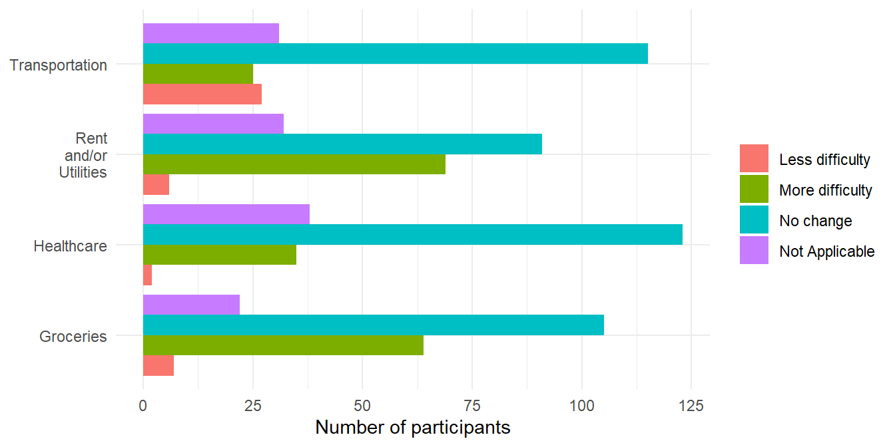
The Figure above shows participant responses for healthcare, groceries, transportation and rents/utilities. It’s encouraging to see the modal response in each case is “No change,” and no change accounts for the majority of responses in transportation, healthcare, and groceries. A large proportion of participants report no change in their ability to pay for healthcare, suggesting many respondents’ access to healthcare is relatively stable. We imagine many of these respondents receive healthcare through parents, an employer, their school, or a government program, which likely haven’t been affected (at least yet) by the outbreak and associated economic consequences.
Still, roughly ⅓ of respondents report more difficulty in paying for rent/utilities and groceries. Even healthcare is reported to be more difficult to access by about 18% of the sample. This reflects the increase in economic precarity we anticipated to find. It is interesting that more respondents reported transportation was less difficult to pay for than more difficult. However, this can probably be explained by (1) the stay at home order reducing the need for transportation altogether and (2) the historically low price of crude oil has led to remarkably low fuel prices. Next we look to see whether these responses differ based on responses to other questions in our survey. To make this easier to view, instead of showing all four responses, the next three figures display the net change in difficulty (more difficult - less difficult) for each type of expense. We investigate whether first generation status, changes in employment, and changes in income influence the net change in difficulty for all four items. Given the unique nature of the transportation responses, we will mostly focus on the other three.
Understanding How More Difficulty in Paying for Certain Expenses is affected by Changes in Personal Income
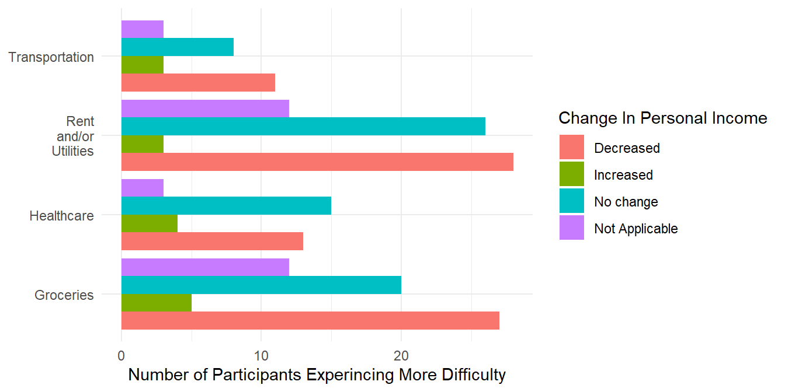
The figure above shows participants experincing more difficulty paying rent/utilities is associated with income changes in an expected way. The subset reporting a decrease in income has a much larger count than the other categories. This pattern seems to also appear in expense categories of Transportation and Groceries as well.
Healthcare specifically is interesting because the subset reporting "No Change" in income since the outbreak shows the highest count with experincing difficulty in paying for this category. This implies respondents feel an increase in difficulty regardless of whether their income increased or decreased. This finding could relate to the fact that income, access to health care, and need for healthcare spending (i.e. whether the respondent happened to need medical attention or not) are not tightly connected.
Understanding How More Difficulty in Paying for Certain Expenses is affected by Generation Status
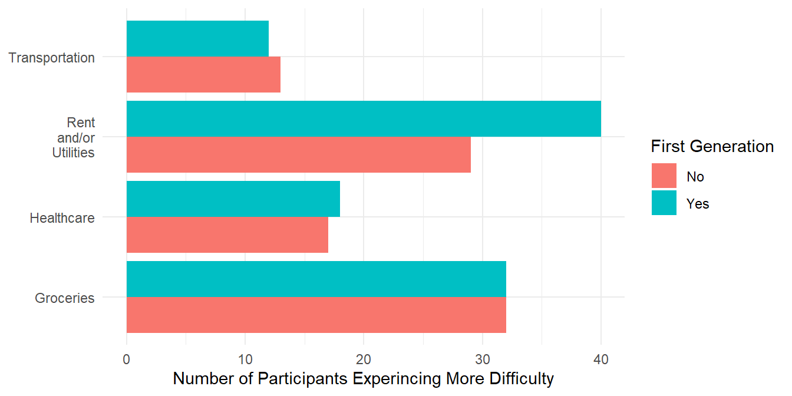
The Figure above shows participants who experince more difficulty in paying for these four categories, stratified by first generation status. First generation participants have experinced more difficulty than their counterparts in the expense category of Rent and Utilities. Assuming first generation status is a reasonable proxy for SES, this suggests lower SES is associated with more difficulty paying for rent/utilities. For the three other expenses, both first generation students and non-first generation students within the subset of participants who experince more difficulty seem to be about the same.
Social Distancing
Life in the Time of Social Distancing
In this section we explore how the social life of our respondents has changed since the outbreak of COVID-19. The survey includes several questions about the respondents' social behavior and their attitudes toward social distancing and the stay at home order.
Changes to Social Behavior
Social interactions
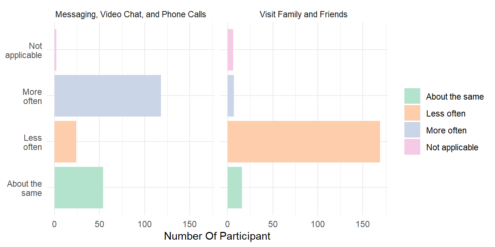
The Figure above shows 59.6% of the respondents report using more messaging, phone calls, and video chat services, and 85.35% said that they visit their families or friends less often compared to before the outbreak. These results are unsurprising, considering the recent social distancing and stay-at-home order. It offers evidence that people have reduced physical contact with people as due to the stay-at-home order. However, this also shows the respondents are less exposed to quality social interaction, as people are forced to limit their physical social interaction with others, and virtual social interaction may not be a sufficient alternative.
Entertainment
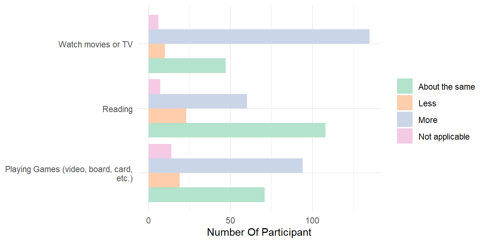
About 68% of respondents report playing more games and 47% report watching more TV and movies. These forms of entertainment likely serve as alternatives for other forms of entertainment that are not feasible due to the stay-at-home order. It also can be said that students have more spare time due to the stay-at-home order (because they save the commuting time due to the transition of online learning, etc.) so they might spend more time on games and TV shows respectively.
Unlike games and TV, most respondents (54.55%) spend the same amount of time on reading after the outbreak compared to before the outbreak. We assume that this is due to the fact that reading is not the most popular way to entertain themselves among the undergraduates’ age group. However, we could still see that more respondents (30.3%) reported spending more time on reading than those reporting to spend less time (11.62%). The mechanism behind this is presumably to be the same, as we discussed above.
Other changes in lifestyle and behaviors
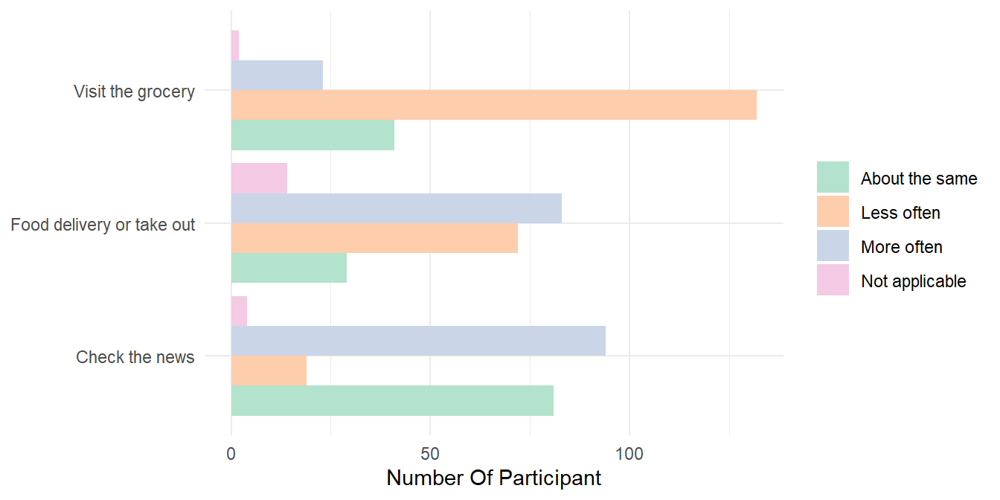
Similarly, we found most respondents (66.67%) visit the grocery stores less often. The discussion for social interaction seems to be fit for this topic as well. People try to avoid contact with humans as much as possible, so they choose to self-quarantine. Many apps in the markets (for example, Amazon Fresh and Instacart) allow people to order groceries delivered to the door. Therefore, it is not necessary to visit grocery stores to get what they need.
For food delivery or take out, the difference between "More often" (41.92%) and "Less often" (36.36%) is very small, and the percentage are both high. Since restaurants are not essential business and ordered to be closed, it makes sense that those who usually dine in are forced to choose takeout or food delivery. Consequently, they order takeout or food delivery more often. On the other hand, for those who report to order takeout or food delivery less often, the chances are that they have more spare time to cook for themselves; they might be too bored so they start learning how to cook during this outbreak(according to what our interviewee said). It is also possible that they return to their parents' house, so their parents cook for them, thus reducing their needs for takeout and food delivery.
The result for checking the news is very consistent with what we predicted. 47.47% of the respondents check the news more often, and we think it is very likely due to the evolving COVID-19 outbreak every day, and people have huge concerns about it. Again, it could be that people generally have more time to read the news during their self-quarantine.
Attitudes on Social Distancing